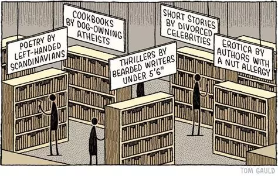

Semaine Data SHS 2025

La Tokenisation
 C’est une étape importante de la préparation des données, qui nous permets de passer du corpus au “mot”.
C’est une étape importante de la préparation des données, qui nous permets de passer du corpus au “mot”.
# ==============================================================================
# 3. PRÉTRAITEMENT DU CORPUS
# ==============================================================================
# Tokenisation et nettoyage
# Tokeniser le corpus
tokens_txt <- tokens(corpus_txt,
remove_punct = TRUE, # Retirer ponctuation
remove_numbers = TRUE, # Retirer nombres
remove_symbols = TRUE) # Retirer symboles
# Convertir en minuscules
tokens_txt <- tokens_tolower(tokens_txt)
# Retirer les stopwords français
# Etape sensible !
tokens_txt <- tokens_remove(tokens_txt,
pattern = stopwords("fr"))
# Optionnel : Ajouter vos propres mots à exclure
stop_proust <- proustr::proust_stopwords()
# Optionnel : Ajouter vos propres mots à exclure
mots_exclus <- c("peut", "faire", "donc", "ainsi", "cela")
# Optionnel : mots supplémentaire iramuteq
mots_supp<- c("a","ŕ","ŕ dieu vat","ŕ l'encontre","a l'instar","ŕ l'instar","acré","adieu","afin","afin d","afin de","afin qu","afin que","ah","ai","aie","aďe","aient","aies","ailleurs","ains","ainsi","ait","alentour","alentours","alerte","alias","alléluia","allo","allô","alors","am stram gram","amen","an","ans","anti","aprčs","arričre","as","ase","assez","atchoum","attention","au","au dessus","aube","aucun","aucune","aucunement","aucunes","aucuns","audit","aujourd hui","auparavant","auprčs","auquel","aura","aurai","auraient","aurais","aurait","auras","aurez","auriez","aurions","aurons","auront","aussi","autant","autour","autours","autre","autrefois","autres","autrichiens","autrui","aux","auxdits","auxquelles","auxquels","avaient","avais","avait","avant","avants","avec","avez","aviez","avions","avoir","avoirs","avons","ayant","ayez","ayons","b","badabam","badaboum","bah","balle peau","balpeau","banco","bang","basta","baste","bé","beaucoup","because","ben","berk","bernique","beu","beuark","beurk","bicause","bien","biens","bigre","bim","bing","bis","bof","bon","bonne","bonnes","bons","boudiou","boudu","bouf","bougre","boum","boums","bravo","broum","brrr","bye","bye bye","c","c est ŕ dire","ça","calmos","car","caramba","cars","ce","ceci","cela","celle","celle ci","celle lŕ","celles","celles ci","celles lŕ","celui","celui ci","celui lŕ","cent","cents","cependant","certain","certaine","certaines","certains","certes","ces","cet","cette","ceux","ceux ci","ceux lŕ","chacun","chacune","chaque","chez","chic","chiche","chouette","chut","ci","ci aprčs","ci contre","ci dessous","ci dessus","ci inclus","ci inclus","ci inclus")
mots_supp2<- c("ci joint","ci joint","ci joint","ciao","cinq","cinquante","cinquante cinq","cinquante deux","cinquante huit","cinquante neuf","cinquante quatre","cinquante sept","cinquante six","cinquante trois","clac","clic","clic clac","combien","comme","comment","con","concernant","contre","contres","cot cot codec","couic","crac","cré","crénom","cric crac","cristi","croie","croient","croies","croira","croirai","croiraient","croirais","croirait","croiras","croire","croirez","croiriez","croirions","croirons","croiront","crois","croit","croyaient","croyais","croyait","croyant","croyez","croyiez","croyions","croyons","cru","crue","crűmes","crurent","crus","crusse","crussent","crusses","crut","crűt","d","d ","d abord","da","dame","damned","dans","davantage","dc","de","debout","dedans","dehors","déjŕ","demain","demains","demi","demie","demies","demis","depuis","derričre","des","dčs","desdites","desdits","desquelles","desquels","dessous","dessus","deux","devaient","devais","devait","devant","devants","devers","devez","deviez","devions","devoir","devoirs","devons","devra","devrai","devraient","devrais","devrait","devras","devrez","devriez","devrions","devrons","devront","dia","diable","diantre","différents","dig","ding","dira","dirai","diraient","dirais","dirait","diras","dire","dirent","dires","direz","diriez","dirions","dirons","diront","dis","disaient","disais","disait","disant","dise","disent","dises","disiez","disions","disons","dissent","dit","dît","dite","dites","dîtes","dits","divers","diverses","dix","dix huit","dix neuf","dix sept","dm","dois","doit","doive","doivent","doives","dommage","donc","dong","dont","douze","dring","du","dű","dudit","due","dues","dűmes","duquel","durant","durent","dus","dusse","dussent","dusses","dussiez","dussions","dut","dűt")
mots_supp3<- c("e","eh","elle","elle męme","elles","elles męmes","en","encore","enfin","ensuite","entre","envers","environ","environs","es","čs","est","est ce que","et","étaient","étais","était","étant","été","ętes","étiez","étions","ętre","eu","eue","eues","euh","eűmes","euręka","eurent","eus","eusse","eussé","eussent","eusses","eussiez","eussions","eut","eűt","eűtes","eux","eux męmes","excepté","extra","extras","f","faire","fais","faisaient","faisais","faisait","faisant","faisiez","faisions","faisons","fait","faite","faites","fallait","falloir","fallu","fallut","fallűt","fasse","fassent","fasses","fassiez","fassions","faudra","faudrait","faut","fera","ferai","feraient","ferais","ferait","feras","ferez","feriez","ferions","ferons","feront","fi","fichtre","fîmes","firent","fis","fisse","fissent","fissiez","fissions","fit","fît","fîtes","flac","floc","flop","font","force","fors","fort","forte","fortes","fortissimo","forts","fouchtra","franco","fűmes","furent","fus","fusse","fussent","fusses","fussiez","fussions","fut","fűt","fűtes","g","gare","gares","gna gna","gnagnagna","goddam","grâce","grand chose","gué","gy","ha","haha","hai","halte","hardi","hare","hé","hein","hélas","hello","hem","hep","heu","hi","hi han","hic","hier","hip","hisse","ho","holŕ","hom","hon","hop","hormis","hors","hou","houhou","houlŕ","houp","hourra","hourras","hue","hugh","huit","hum","hurrah","icelle","icelles","icelui","ici","il","illico","ils","in","inch allah","inter","inters","itou","j","jadis","jamais","jarnicoton","je","jouxte","jusqu","jusqu ŕ","jusqu au","jusque","juste","justes","l","l ","la","lŕ","la la la","lala","laquelle","las","le","lendemain","lendemains","lequel","les","lčs","lesquelles","lesquels","leur","leurs","lez","loin","longtemps","lors","lorsqu","lorsque","lui","lui męme")
mots_supp4<- c("m","ma","macarel","macarelle","madame","maint","mainte","maintenant","maintes","maints","mais","mal","male","males","malgré","mâtin","maux","mazette","mazettes","me","męme","męmes","merci","merdasse","merde","merdre","mes","mesdames","messieurs","meuh","mézig","mézigue","mi","miam","miam miam","mien","mienne","miennes","miens","mieux","mil","mille","milles","million","millions","mince","ml","mlle","mm","mme","moi","moi męme","moindre","moindres","moins","mon","monseigneur","monsieur","morbleu","mordicus","mordieu","motus","mouais","moyennant","n","n ","n est ce pas","na","ne","néanmoins","neuf","ni","niet","non","nonante","nonante huit","nonobstant","nos","notre","nôtre","nôtres","nous","nous męme","nous męmes","nul","nulle","nulles","nuls","o","ô","octante","oh","ohé","ok","olé","ollé","on","ont","onze","or","ou","oů","ouah","ouais","ouf","ouh","oui","oui da","ouiche","ouille","oust","ouste","outre","outres","pa","palsambleu","pan","par","par dedans","par delŕ","par derričre","par dessous","par dessus","par devant","par devers","parbleu","parce","parce que","pardi","pardieu","pardon","parfois","parmi","partout","pas","pasque","patapouf","patata","patati","patatras","pchitt","pendant","pendante","pendantes","pendants","personne","personnes","peste","peu","peuchčre","peuh","peut","peut ętre","peuvent","peux","pff","pfft","pfutt","pianissimo","pianissimos","pin pon","pis","plein","ploc","plouf","plupart","plus","plusieurs","point","points","pollope","polope","pouah","pouce","pouf","pouh","pouic","pour","pourquoi","pourra","pourrai","pourraient","pourrais","pourrait","pourras","pourrez","pourriez","pourrions","pourrons","pourront","pourtant","pouvaient","pouvais","pouvait","pouvant","pouvez","pouviez","pouvions","pouvoir","pouvoirs","pouvons","prčs","presque")
mots_supp5<- c("primo","pristi","prosit","prout","pschitt","pseudo","pseudos","psitt","pst","pu","puis","puisqu","puisque","puissamment","puisse","puissent","puisses","puissiez","puissions","pűmes","purent","pusse","pussent","pusses","pussiez","put","pűt","pűtes","qu","quand","quant","quarante","quarante cinq","quarante deux","quarante huit","quarante neuf","quarante quatre","quarante sept","quarante six","quarante trois","quasi","quatorze","quatre","quatre vingt","quatre vingt cinq","quatre vingt deux","quatre vingt dix huit","quatre vingt dix neuf","quatre vingt dix sept","quatre vingt douze","quatre vingt huit","quatre vingt neuf","quatre vingt onze","quatre vingt quatorze","quatre vingt quatre","quatre vingt quinze","quatre vingt seize","quatre vingt sept","quatre vingt six","quatre vingt treize","quatre vingt trois","quatre vingt un","quatre vingts","que","quel","quelconque","quelconques","quelle","quelles","quelqu un","quelqu une","quelque","quelquefois","quelques","quelques unes","quelques uns","quels","qui","qui vive","quiconque","quinze","quoi","quoique","rantanplan","rasibus","rataplan","re belote","rebelote","recta","revoici","revoilŕ","rez","rien","riens","s","s ","sa","sachant","sache","sachent","saches","sachez","sachiez","sachions","sachons","sacrebleu","sacrédié","sacredieu","sais","sait","salut","sans","saperlipopette","sapristi","sauf","saufs","saura","saurai","sauraient","saurais","saurait","sauras","sauront","savaient","savais","savait","savent","savez","saviez","savions","savoir","savoirs","savons","scrogneugneu","se","sécolle","secundo","seize","selon","sept","septante","septante cinq","septante sept","sera","serai","seraient","serais","serait","seras","serez","seriez","serions","serons","seront","ses","sézigue","si","sic","sien","sienne","siennes","siens")
mots_supp6<- c("sinon","six","skaal","snif","sniff","soi","soi męme","soient","sois","soit","soixante","soixante cinq","soixante deux","soixante dix","soixante dix huit","soixante dix neuf","soixante dix sept","soixante douze","soixante huit","soixante neuf","soixante quatorze","soixante quatre","soixante quinze","soixante seize","soixante sept","soixante six","soixante treize","soixante trois","sommes","son","sons","sont","soudain","soudaine","soudaines")
mots_supp7<- c("soudains","sous","sous prieur","souvent","soyez","soyons","splash","su","subito","suis","suivant","sűmes","sur","sure","surent","sures","surnombre","surs","surtout","surtouts","sus","susse","sussent","sut","sűt","t","t ","ta","tacatac","tacatacatac","tagada","taďaut","tandis qu","tandis que","tant","tap","taratata","tard","tchao","tchin tchin","tchin tchin","te","té","tel","telle","telles","tels","tertio","tes","tézig","tézigue","tien","tienne","tiennes","tiens","tiens la moi","tintin","to","toi","toi męme","ton","tons","toujours","tous","tout","tout fait","toute","toutefois","toutes","touts","treize","trente","trente cinq","trente deux","trente huit","trente neuf","trente quatre","trente sept","trente six","trente trois","trčs","trois","trop","tu","tudieu","turlututu","u","un","une","unes","uns","v","van","vans","ventre saint gris","ventrebleu","vers","versus","vertubleu","veuille","veuillent","veuilles","veuillez","veulent","veut","veux","via","vingt","vingt cinq","vingt deux","vingt huit","vingt neuf","vingt quatre","vingt sept","vingt six","vingt trois","vis ŕ vis","vite","vivat","vive","vlan","vlouf","voici","voilŕ","voire","volontiers","vos","votre","vôtre","vôtres","voudra","voudrai","voudraient","voudrais","voudrait","voudras","voudrez","voudriez","voudrions","voudrons","voudront","voulaient","voulais","voulait","voulant","voulez","vouliez","voulions","vouloir","vouloirs","voulons","voulu","voulue","voulűmes","voulurent","voulus","voulusse","voulussent","voulut","voulűt","vous","vous męme","vous męmes","vroom","vroum","wouah","x","y","yeah","youp","youpi","yu","zou","zut","zzz","zzzz")
# Sans accent
mots_supp8<- c("a","a","a dieu vat","a l'encontre","a l'instar","a l'instar","acre","adieu","afin","afin d","afin de","afin qu","afin que","ah","ai","aie","aie","aient","aies","ailleurs","ains","ainsi","ait","alentour","alentours","alerte","alias","alleluia","allo","allô","alors","am stram gram","amen","an","ans","anti","apres","arriere","as","ase","assez","atchoum","attention","au","au dessus","aube","aucun","aucune","aucunement","aucunes","aucuns","audit","aujourd hui","auparavant","aupres","auquel","aura","aurai","auraient","aurais","aurait","auras","aurez","auriez","aurions","aurons","auront","aussi","autant","autour","autours","autre","autrefois","autres","autrichiens","autrui","aux","auxdits","auxquelles","auxquels","avaient","avais","avait","avant","avants","avec","avez","aviez","avions","avoir","avoirs","avons","ayant","ayez","ayons","b","badabam","badaboum","bah","balle peau","balpeau","banco","bang","basta","baste","be","beaucoup","because","ben","berk","bernique","beu","beuark","beurk","bicause","bien","biens","bigre","bim","bing","bis","bof","bon","bonne","bonnes","bons","boudiou","boudu","bouf","bougre","boum","boums","bravo","broum","brrr","bye","bye bye","c","c est a dire","ça","calmos","car","caramba","cars","ce","ceci","cela","celle","celle ci","celle la","celles","celles ci","celles la","celui","celui ci","celui la","cent","cents","cependant","certain","certaine","certaines","certains","certes","ces","cet","cette","ceux","ceux ci","ceux la","chacun","chacune","chaque","chez","chic","chiche","chouette","chut","ci","ci apres","ci contre","ci dessous","ci dessus","ci inclus","ci inclus","ci inclus")
mots_supp9<- c("ci joint","ci joint","ci joint","ciao","cinq","cinquante","cinquante cinq","cinquante deux","cinquante huit","cinquante neuf","cinquante quatre","cinquante sept","cinquante six","cinquante trois","clac","clic","clic clac","combien","comme","comment","con","concernant","contre","contres","cot cot codec","couic","crac","cre","crenom","cric crac","cristi","croie","croient","croies","croira","croirai","croiraient","croirais","croirait","croiras","croire","croirez","croiriez","croirions","croirons","croiront","crois","croit","croyaient","croyais","croyait","croyant","croyez","croyiez","croyions","croyons","cru","crue","crumes","crurent","crus","crusse","crussent","crusses","crut","crut","d","d ","d abord","da","dame","damned","dans","davantage","dc","de","debout","dedans","dehors","deja","demain","demains","demi","demie","demies","demis","depuis","derriere","des","des","desdites","desdits","desquelles","desquels","dessous","dessus","deux","devaient","devais","devait","devant","devants","devers","devez","deviez","devions","devoir","devoirs","devons","devra","devrai","devraient","devrais","devrait","devras","devrez","devriez","devrions","devrons","devront","dia","diable","diantre","differents","dig","ding","dira","dirai","diraient","dirais","dirait","diras","dire","dirent","dires","direz","diriez","dirions","dirons","diront","dis","disaient","disais","disait","disant","dise","disent","dises","disiez","disions","disons","dissent","dit","dit","dite","dites","dites","dits","divers","diverses","dix","dix huit","dix neuf","dix sept","dm","dois","doit","doive","doivent","doives","dommage","donc","dong","dont","douze","dring","du","du","dudit","due","dues","dumes","duquel","durant","durent","dus","dusse","dussent","dusses","dussiez","dussions","dut","dut")
mots_supp10<- c("e","eh","elle","elle meme","elles","elles memes","en","encore","enfin","ensuite","entre","envers","environ","environs","es","es","est","est ce que","et","etaient","etais","etait","etant","ete","etes","etiez","etions","etre","eu","eue","eues","euh","eumes","eureka","eurent","eus","eusse","eusse","eussent","eusses","eussiez","eussions","eut","eut","eutes","eux","eux memes","excepte","extra","extras","f","faire","fais","faisaient","faisais","faisait","faisant","faisiez","faisions","faisons","fait","faite","faites","fallait","falloir","fallu","fallut","fallut","fasse","fassent","fasses","fassiez","fassions","faudra","faudrait","faut","fera","ferai","feraient","ferais","ferait","feras","ferez","feriez","ferions","ferons","feront","fi","fichtre","fimes","firent","fis","fisse","fissent","fissiez","fissions","fit","fit","fites","flac","floc","flop","font","force","fors","fort","forte","fortes","fortissimo","forts","fouchtra","franco","fumes","furent","fus","fusse","fussent","fusses","fussiez","fussions","fut","fut","futes","g","gare","gares","gna gna","gnagnagna","goddam","grâce","grand chose","gue","gy","ha","haha","hai","halte","hardi","hare","he","hein","helas","hello","hem","hep","heu","hi","hi han","hic","hier","hip","hisse","ho","hola","hom","hon","hop","hormis","hors","hou","houhou","houla","houp","hourra","hourras","hue","hugh","huit","hum","hurrah","icelle","icelles","icelui","ici","il","illico","ils","in","inch allah","inter","inters","itou","j","jadis","jamais","jarnicoton","je","jouxte","jusqu","jusqu a","jusqu au","jusque","juste","justes","l","l ","la","la","la la la","lala","laquelle","las","le","lendemain","lendemains","lequel","les","les","lesquelles","lesquels","leur","leurs","lez","loin","longtemps","lors","lorsqu","lorsque","lui","lui meme")
mots_supp11<- c("m","ma","macarel","macarelle","madame","maint","mainte","maintenant","maintes","maints","mais","mal","male","males","malgre","mâtin","maux","mazette","mazettes","me","meme","memes","merci","merdasse","merde","merdre","mes","mesdames","messieurs","meuh","mezig","mezigue","mi","miam","miam miam","mien","mienne","miennes","miens","mieux","mil","mille","milles","million","millions","mince","ml","mlle","mm","mme","moi","moi meme","moindre","moindres","moins","mon","monseigneur","monsieur","morbleu","mordicus","mordieu","motus","mouais","moyennant","n","n ","n est ce pas","na","ne","neanmoins","neuf","ni","niet","non","nonante","nonante huit","nonobstant","nos","notre","nôtre","nôtres","nous","nous meme","nous memes","nul","nulle","nulles","nuls","o","ô","octante","oh","ohe","ok","ole","olle","on","ont","onze","or","ou","ou","ouah","ouais","ouf","ouh","oui","oui da","ouiche","ouille","oust","ouste","outre","outres","pa","palsambleu","pan","par","par dedans","par dela","par derriere","par dessous","par dessus","par devant","par devers","parbleu","parce","parce que","pardi","pardieu","pardon","parfois","parmi","partout","pas","pasque","patapouf","patata","patati","patatras","pchitt","pendant","pendante","pendantes","pendants","personne","personnes","peste","peu","peuchere","peuh","peut","peut etre","peuvent","peux","pff","pfft","pfutt","pianissimo","pianissimos","pin pon","pis","plein","ploc","plouf","plupart","plus","plusieurs","point","points","pollope","polope","pouah","pouce","pouf","pouh","pouic","pour","pourquoi","pourra","pourrai","pourraient","pourrais","pourrait","pourras","pourrez","pourriez","pourrions","pourrons","pourront","pourtant","pouvaient","pouvais","pouvait","pouvant","pouvez","pouviez","pouvions","pouvoir","pouvoirs","pouvons","pres","presque")
mots_supp12<- c("primo","pristi","prosit","prout","pschitt","pseudo","pseudos","psitt","pst","pu","puis","puisqu","puisque","puissamment","puisse","puissent","puisses","puissiez","puissions","pumes","purent","pusse","pussent","pusses","pussiez","put","put","putes","qu","quand","quant","quarante","quarante cinq","quarante deux","quarante huit","quarante neuf","quarante quatre","quarante sept","quarante six","quarante trois","quasi","quatorze","quatre","quatre vingt","quatre vingt cinq","quatre vingt deux","quatre vingt dix huit","quatre vingt dix neuf","quatre vingt dix sept","quatre vingt douze","quatre vingt huit","quatre vingt neuf","quatre vingt onze","quatre vingt quatorze","quatre vingt quatre","quatre vingt quinze","quatre vingt seize","quatre vingt sept","quatre vingt six","quatre vingt treize","quatre vingt trois","quatre vingt un","quatre vingts","que","quel","quelconque","quelconques","quelle","quelles","quelqu un","quelqu une","quelque","quelquefois","quelques","quelques unes","quelques uns","quels","qui","qui vive","quiconque","quinze","quoi","quoique","rantanplan","rasibus","rataplan","re belote","rebelote","recta","revoici","revoila","rez","rien","riens","s","s ","sa","sachant","sache","sachent","saches","sachez","sachiez","sachions","sachons","sacrebleu","sacredie","sacredieu","sais","sait","salut","sans","saperlipopette","sapristi","sauf","saufs","saura","saurai","sauraient","saurais","saurait","sauras","sauront","savaient","savais","savait","savent","savez","saviez","savions","savoir","savoirs","savons","scrogneugneu","se","secolle","secundo","seize","selon","sept","septante","septante cinq","septante sept","sera","serai","seraient","serais","serait","seras","serez","seriez","serions","serons","seront","ses","sezigue","si","sic","sien","sienne","siennes","siens")
mots_supp13<- c("sinon","six","skaal","snif","sniff","soi","soi meme","soient","sois","soit","soixante","soixante cinq","soixante deux","soixante dix","soixante dix huit","soixante dix neuf","soixante dix sept","soixante douze","soixante huit","soixante neuf","soixante quatorze","soixante quatre","soixante quinze","soixante seize","soixante sept","soixante six","soixante treize","soixante trois","sommes","son","sons","sont","soudain","soudaine","soudaines")
mots_supp14<- c("soudains","sous","sous prieur","souvent","soyez","soyons","splash","su","subito","suis","suivant","sumes","sur","sure","surent","sures","surnombre","surs","surtout","surtouts","sus","susse","sussent","sut","sut","t","t ","ta","tacatac","tacatacatac","tagada","taiaut","tandis qu","tandis que","tant","tap","taratata","tard","tchao","tchin tchin","tchin tchin","te","te","tel","telle","telles","tels","tertio","tes","tezig","tezigue","tien","tienne","tiennes","tiens","tiens la moi","tintin","to","toi","toi meme","ton","tons","toujours","tous","tout","tout fait","toute","toutefois","toutes","touts","treize","trente","trente cinq","trente deux","trente huit","trente neuf","trente quatre","trente sept","trente six","trente trois","tres","trois","trop","tu","tudieu","turlututu","u","un","une","unes","uns","v","van","vans","ventre saint gris","ventrebleu","vers","versus","vertubleu","veuille","veuillent","veuilles","veuillez","veulent","veut","veux","via","vingt","vingt cinq","vingt deux","vingt huit","vingt neuf","vingt quatre","vingt sept","vingt six","vingt trois","vis a vis","vite","vivat","vive","vlan","vlouf","voici","voila","voire","volontiers","vos","votre","vôtre","vôtres","voudra","voudrai","voudraient","voudrais","voudrait","voudras","voudrez","voudriez","voudrions","voudrons","voudront","voulaient","voulais","voulait","voulant","voulez","vouliez","voulions","vouloir","vouloirs","voulons","voulu","voulue","voulumes","voulurent","voulus","voulusse","voulussent","voulut","voulut","vous","vous meme","vous memes","vroom","vroum","wouah","x","y","yeah","youp","youpi","yu","zou","zut","zzz","zzzz")
mot_supp_iramuteq <- c(mots_supp, mots_supp2, mots_supp3, mots_supp4, mots_supp5, mots_supp6, mots_supp7, mots_supp8, mots_supp9, mots_supp10, mots_supp11, mots_supp12, mots_supp13, mots_supp14)
# Nouvelles suppression des mots supplémentaires
tokens_txt <- tokens_remove(tokens_txt, pattern = c(stop_proust, mot_supp_iramuteq, mots_exclus ))
# Optionnel : Stemming (réduction à la racine)
# tokens_txt <- tokens_wordstem(tokens_txt, language = "french")
# Optionnel : Ne garder que les mots de 2 caractères ou plus
tokens_txt <- tokens_select(tokens_txt, min_nchar = 2)Lemmatiser
 C’est une étape sensible et pas forcément nécessaire, à voir en fonction de vos besoins et hypothèses
C’est une étape sensible et pas forcément nécessaire, à voir en fonction de vos besoins et hypothèses
#==============================================================================
# 3bis. LEMMATISATION EN FRANÇAIS
# ==============================================================================
# Sachez qu'il est aussi possible d'utiliser les package spacyr et udpipe
# La documentation et l'aide est très riche
#==============================================================================
# Lemmatisation simplifiée avec un dictionnaire personnalisé venu d'Iramuteq
# ==============================================================================
# En utilisant le dictionnaire Iramuteq
dico_path <- here("dictionnaire_iramuteq.csv")
lemma_dict <- read.csv(dico_path) # format: nom,lemme
tokens_lemma <- tokens_replace(tokens_txt,
pattern = lemma_dict$nom,
replacement = lemma_dict$lemme)
Comment choisir le nombre de topics ?
C’est le paramètre fondamental de notre analyse.
La solution recommandé est une approche mixte alliant une démarche quantitative et qualitative.
Point crucial : Les métriques quantitatives guident, mais l’interprétabilité humaine doit avoir le dernier mot. Un modèle avec d’excellentes métriques mais des topics incompréhensibles est inutile en pratique.